ჭიათურა იმერეთის მხარეში მდებარე მუნიციპალიტეტია. იგი ყურადღებას იქცევს უძველესი არქეოლოგიურ-კულტურული ძეგლებითა და
ულამაზესი ბუნებით. რაიონის ტერიტორია უძველესი დროიდან, ჯერ კიდევ ქვის ხანიდან იყო დასახლებული. ჭიათურაში, ძუძუანას მღვიმეშია აღმოჩენილი მსოფლიოში ყველაზე
ძველი ძაფის ნაშთები. მუნიციპალიტეტის ტერიტორიაზე, კოტიას მღვიმეში, პირველად კავკასიის არქეოლოგის ისტორიაში აღმოაჩინეს პალეოლითელი ადამიანის მთლიანი ჩონჩხი.
ჭიათურა დასახლებული ყოფილა ბრინჯაოს ხანასა და ანტიკურ პერიოდშიც. იგი განვითარებული ყოფილა შუა საუკუნეებშიც, რასაც მრავლად შემორჩენილი ციხე-სიმაგრეები და
მაღალმხატვრული ღირებულების მქონე ტაძრები მეტყველებს. დღესდღეობით ჭიათურა განვითარებული მუნიციპალიტეტია, რომლის ფორმირებაში მნიშვნელოვანი როლი შეასრულა
მდინარე ყვირილის ხეობაში არსებული მანგანუმის მადნის საბადოს ბაზაზე წარმოქმნილმა მრეწველობამ. რაიონში ფუნქციონირებს მხარეთმცოდნეობის მუზეუმი, დრამატული თეატრი,
სპორტული და სახელოვნებო სასწავლებლები და სხვა კულტურულ-საგანმანათლებლო დაწესებულებები. მუნიციპალიტეტის ეკონომიკაში მთავარ როლს ასრულებს
მრეწველობა, კერძოდ მანგანუმის მადნის მოპოვება-გამდიდრება. ჭიათურას ასევე დიდი
ტურისტული პოტენციალი აქვს, რასაც ბუნების სილამაზე და კულტურულ-ისტორიული ძეგლების სიმრავლე განაპირობებს. საოცარი კარსტული მღვიმეები, ხეობები, უძველესი
ტაძრები და ციხე-სიმაგრეები უამრავ მნახველს იზიდავს და წარუშლელ შთაბეჭდილებას ახდენს.
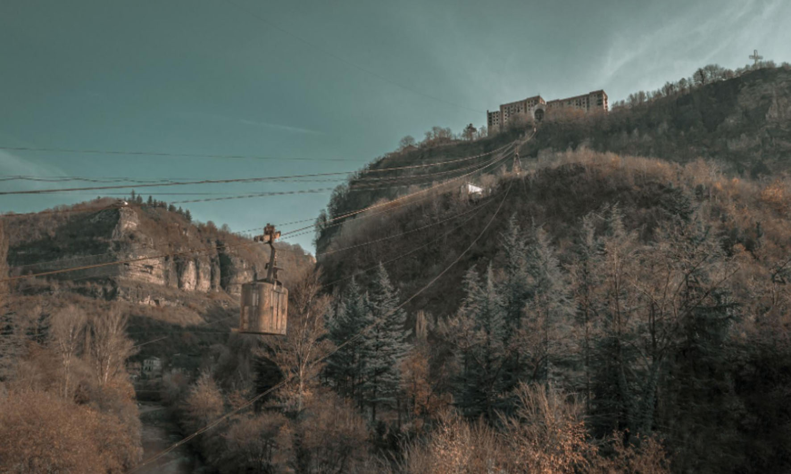
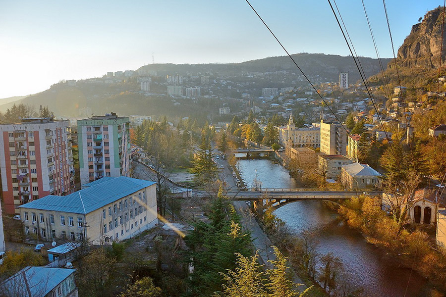
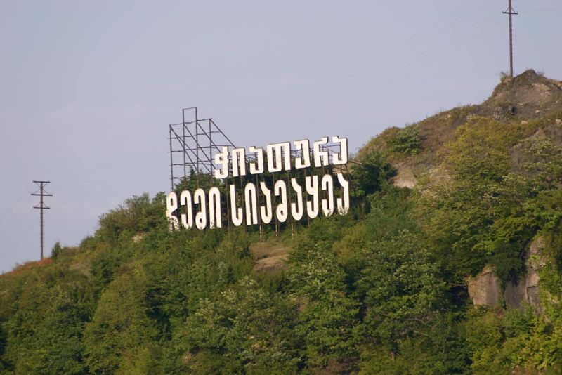
"ჭიათურა_შავი ოქროს ქალაქი"
გეოგრაფია
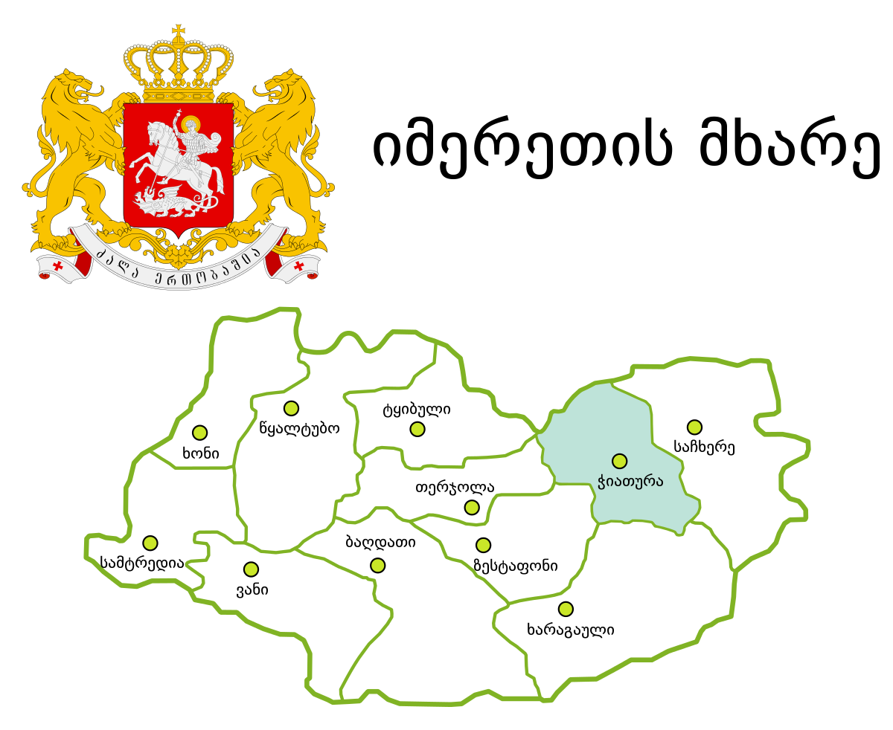
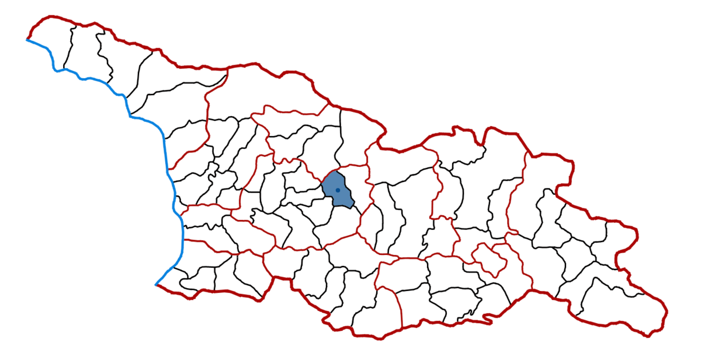
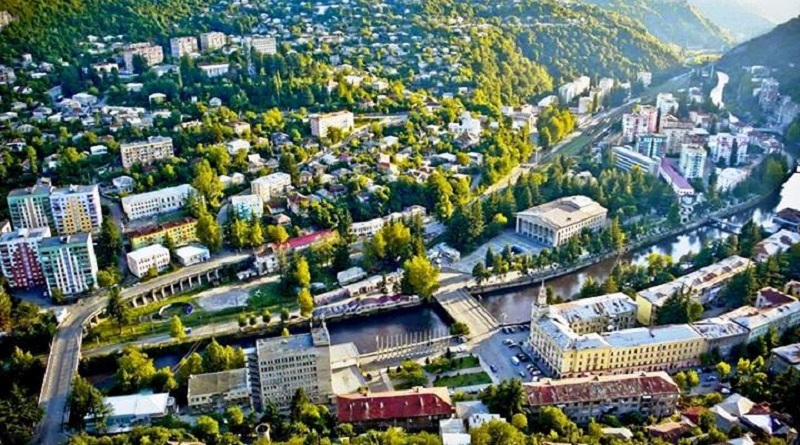
ჭიათურა მდებარეობს ჭიათურის პლატოსა და მდინარე ყვირილის ვიწრო ხეობაში, ზღვის დონიდან 340-500 მეტრზე, გომი-საჩხერე-ზესტაფონის საავტომობილო გზაზე. თბილისიდან 220 კმ-ის დაშორებით (რკინიგზით).
ჭიათურაში საკმაოდ ნოტიო ზღვის სუბტროპიკული ჰავაა, იცის ზომიერად ცივი ზამთარი და შედარებით მშრალი, ცხელი ზაფხული. ჰაერის საშუალო ტემპერატურაა +13 °C, იანვარი +2,4 °C, ივლისი +23,1 °C, აბსოლუტური მინიმუმი -20 °C, აბსოლუტური მაქსიმუმი +42 °C ნალექები 1100 მმ. წელიწადში.
ქალაქის ცენტრალური დასახლება მდინარე ყვირილის ორივე ნაპირზეა და თითქმის ყოველი მხრიდან მაღალი, ციცაბო კლდეებით შემოზღუდულ ქვაბულშია მოქცეული. სამრეწველო უბნები მას 2-6 კმ რადიუსით ეკვრის.
ისტორია
ქალაქის წარმოშობა და შემდგომი განვითარება განაპირობა მდინარე ყვირილის ხეობაში არსებული მანგანუმის მადნის საბადოს ბაზაზე წარმოქმნილმა მრეწველობამ. ქალაქს საფუძველი
ჩაეყარა 1879 წელს, როდესაც აკაკი წერეთლის ინიციატივით დაიწყო მანგანუმის მადნის მოპოვება. დაარსდა ჭიათურის შავი ქვის მომპოვებელი საზოგადოება, რომელიც ახორციელებდა
მანგანუმის მოპოვებას. 1895 წელს გაიყვანეს რკინიგზა, რომელმაც ჭიათურის რკინიგზის სადგურ შორაპანს დაუკავშირა. ამ პერიოდში ჭიათურაში 6 ათასამდე ადამიანი მუშაობდა,
მანგანუმის ხვედრი წილი მსოფლიო ექსპორტში კი 50 %-ს აღწევდა. XIX საუკუნეში განაშენიანებული მხოლოდ მდინარე ყვირილის მარჯვენა მხარე იყო, ძველი ჭიათურა ცნობილი
იყო თავისი ვიწრო ქუჩებით, რომლებიც სტიქიურად, დაგეგმვის გარეშე წარმოიშვნენ. ამ ნაწილში ისტორიული განაშენიანება და ქუჩების ქსელი შემორჩენილია.
1892 წელს ინგლესელებმა, ჭიათურაში, საქართველოს ტერიტორიაზე ჩოგბურთის პირველი კორტი ააშენეს. ჩოგბურთის განვითარება საქართველოში დასაბამს XIX საუკუნის
დამლევიდან იღებს. ჭიათურაში ინგლისური ფირმა „Forward and Salinas“-ის მმართველმა ჯონ ტარსეიმ მანგანუმის ქალაქში ახალი თამაში ლაუნ-ჩოგბურთი შემოიტანა.
გამოჩენილი ინგლისელი ჩოგბურთელი და პედაგოგი იან ჰომერი, რომელიც ჭიათურაში მოღვაწეობდა თავის მოგონებებში აღნიშნავს, რომ წერეთლების ოჯახი და აკაკი წერეთელი
ადევნებდა თვალს საჩოგბურთო სანახაობას. ჭიათურიდან ჩოგბურთმა გავრცელება თბილისსა და ბათუმში ჰპოვა.
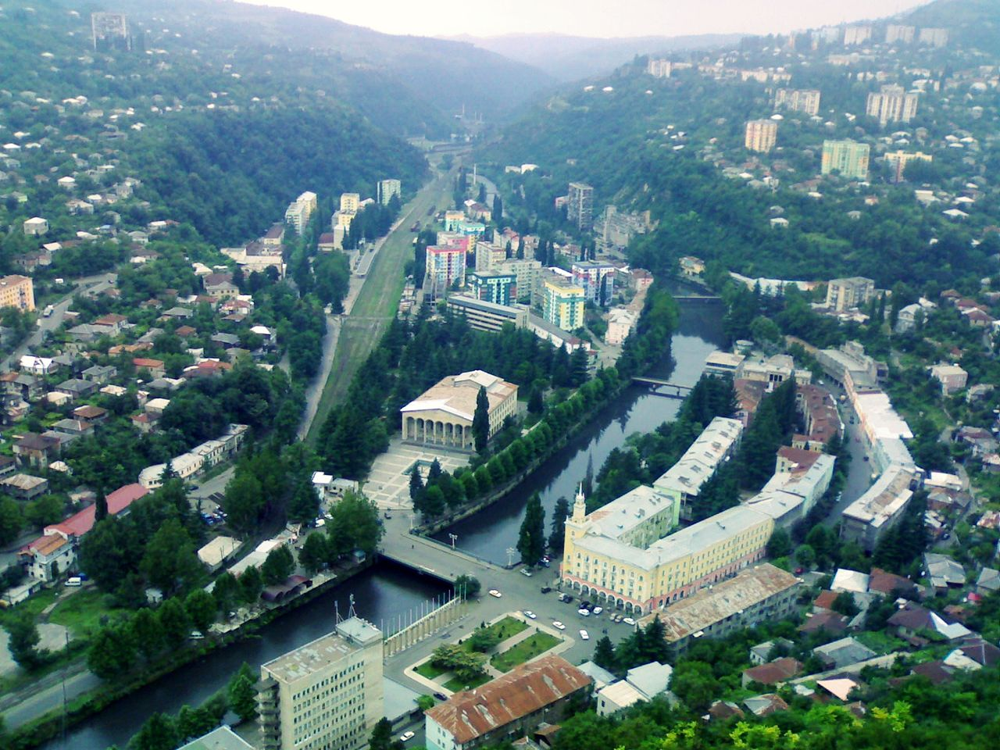
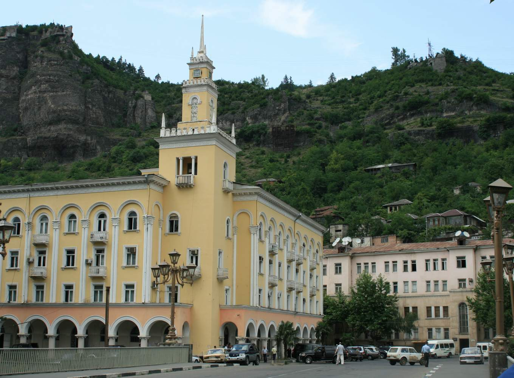
"ჭიაა თუ რა?"
ჭიათურა ქალაქად გამოცხადდა 1921 წელს. 1921 წლიდან ჭიათურაში აღინიშნება ქალაქის დღესასწაული „ჭიათურობა“, რომელსაც ცნობილი ქართველები და
ჭიათურასთან დამეგობრებული ქალაქების წარმომადგენლები ესწრებიან. 1924 წელს საქართველოს თითქმის ყველა დიდ ქალაქში დაიწყო აჯანყება საბჭოთა რეჟიმის წინააღმდეგ.
28 აგვისტოს აჯანყება დაიწყო ჭიათურაშიც. 3 დღის განმავლობაში ჭიათურლებმა შეძლეს შეეკავებინათ აჯანყების ჩასახშობად თბილისიდან გამოგზავნილი სადამსჯელო რაზმები,
თუმცა მე-4 დღეს საქართველოს ცეკა-მ ჩაახშო აჯანყება და სასტიკად გაუსწორდა გამოსვლებში მონაწილე ხალხს, დახვრიტეს 2000-მდე ჭიათურელი.
საბჭოთა პერიოდში ჭიათურა იყო რესპუბლიკური დაქვემდებარების ქალაქი და ჭიათურის საქალაქო საბჭოს ცენტრი. 1954 წელს ჭიათურაში აშენდა სსრკ-ში პირველი სამგზავრო
საბაგირო გზა, ქალაქის ცენტრსა და პერევისის სამრეწველო უბანს შორის. სამგზავრო საკიდი საბაგირო გზების რაოდენობა ჭიათურის შემოგარენში ორ ათეულზე მეტია, რაც ერთ
ერთი მაღალი მაჩვენებელია მსოფლიოში. ჭიათურის სამგზავრო საკიდი საბაგირო გზების პროექტების შედგენა და მშენებლობა ადგილობრივმა ინჟინერებმა განახორციელეს.
ამ საქმის გამოჩენილი სპეციალისტი იყო გიორგი ფანცულაია, რომლის პროექტით როგორც ჭიათურაში, ისე რუსეთის სხვა ქალაქებშიც აშენდა საკიდი საბაგირო გზები. 1964 წელს
ჭიათურა ტროლეიბუსის ხაზით დაუკავშირდა საჩხერეს. ეს პირველი საქალაქთაშორისო სატროლეიბუსო ხაზი იყო საქართველოს სსრ-ში. საბჭოთა პერიოდში გაშენდა ახალი
საცხოვრებელი უბნები, ნაგუთი და სხვა. აშენდა საცხოვრებელი, ადმინისტრაციული და საზოგადოებრივი შენობები, ქალაქის შესასვლელთან დაიდგა დიდების მემორიალი
(არქ. კ. ჩხეიძე, მოქანდაკე: ვ. თოფურიძე).
ეკონომიკა
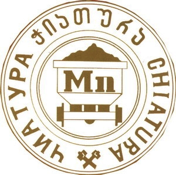
ჭიათურა საქართველოს მოპოვებითი მრეწველობის და ამიერკავკასიაში მანგანუმის მოპოვებისა და გადამუშავების ერთ-ერთი უმნიშვნელოვანესი ცენტრია. ქალაქის მთავარი საწარმოა
ჭიათურის მანგანუმის საბადო, სადაც 3500 ადამიანია დასაქმებული. შესაბამისად, დამსაქმებელი კომპანია "ჯორჯიან-მანგანეზი" მნიშვნელოვან როლს თამაშობს ქალაქის და ქვეყნის ეკონომიკის განვითარებაში
ჭიათურა მანგანუმის კონცენტრატით ამარაგებს ფეროშენადნობთა ქარხანას. ამჟამად ჭიათურაში მოპოვებული
მანგანუმი საქართველოს საერთო ექსპორტის მნიშვნელოვანი ნაწილია. ჭიათურაში მოიპოვებენ უმაღლესი ხარისხის კვარცის ქვიშას, რომელიც საუკეთესო მასალაა შენობების
მოსაპირკეთებლად, ქალაქის მახლობლად სალიეთის მარმარილოს საბადოა, რომელიც ღია კარიერული წესით ამუშავებს წითელ, ვარდისფერ და რუხ მარმარილოს.
ჭიათურაში გადის ზესტაფონი-საჩხერის სარკინიგზო ხაზის მონაკვეთი, ქალაქში არის რკინიგზის სადგური. ქალაქზე გადის შიდასახელმწიფოებრივი მნიშვნელობის საავტომობილო გზა
ზესტაფონი-ჭიათურა-საჩხერე-გომი, რომლითაც ჭიათურა უმოკლესი გზით უკავშირდება თბილისს, შიდა საქალაქო ტრანსპორტია ავტობუსები და ბაგირგზები, რომლითაც ქალაქის
თითქმის ყველა უბანი დაკავშირებული ცენტრთან.
ჭიათურა მანგანუმის მოპოვებისა და გადამუშავების ერთ-ერთი უმნიშვნელოვანესი ცენტრია ამიერკავკასიაში . ჭიათურა მანგანუმის კონცენტრატით ამარაგებს
ფეროშენადნობთა ქარხანას. ამჟამად ჭიათურაში მოპოვებული მანგანუმი საქართველოს საერთო ექსპორტის 10%-ს შეადგენს. ჭიათურაში მოიპოვებენ უმაღლესი ხარისხის კვარცის
ქვიშას, რომელიც საუკეთესო მასალაა შენობების მოსაპირკეთებლად, ქალაქის მახლობლად სალიეთის მარმარილოს საბადოა, რომელიც ღია კარიერული წესით ამუშავებს წითელ,
ვარდისფერ და რუხ მარმარილოს, ქალაქში არის აგრეთვე საშენი მასალის, მსუბუქი და კვების მრეწველობის საწარმოები - სილიკატური აგურის ქარხანა, სამკერვალო და ბაიხის ჩაის
პირველადი დამუშავების ფაბრიკები, პურის, ხორცის, რძის და ადგილობრივი მრეწველობის კომბინატები და სხვა. ჭიათურაში გადის ზესტაფონი-საჩხერის სარკინიგზო ხაზის
მონაკვეთი, ქალაქზე გადის შიდასახელმწიფოებრივი მნიშვნელობის საავტომობილო გზა ზესტაფონი-ჭიათურა-საჩხერე-გომი, რომლითაც ჭიათურა უმოკლესი გზით უკავშირდება
თბილისს, შიდა საქალაქო ტრანსპორტია ავტობუსები და ბაგირგზები, რომლითაც ქალაქის თითქმის ყველა უბანი დაკავშირებული ცენტრთან.
საზოგადოებრივი სფერო
ჭიათურა არის ჭიათურისა და საჩხერის ეპარქიის კათედრა და რეზიდენცია. ქალაქში ფუნქციონირებს რეგიონალური ტელეკომპანია იმერვიზია, ჭიათურაში გამოდის გაზეთები:
„საშევარდნო“, „მაღაროელი“ და „ჭიათურა“ (დაარსდა 1924 წელს). ქალაქის მახლობლად არის ხუროთმოძღვრების ძეგლი, შუა საუკუნეების ციხე და გამოქვაბულები „ჯარბელა“.
კულტურა
ქალაქში არის კულტურის დაწესებულებები: აკაკი წერეთლის სახელობის ჭიათურის დრამატული თეატრი, კინო-თეატრი, რიტუალების სასახლე, მხატვრის სახლი, ჭიათურის
მხარეთმცოდნეობის მუზეუმი და კულტურის სასახლე. ჭიათურაში მოსწავლეთა კულტურულ აღზრდას ემსახურება კულტურის ცენტრთან არსებული „მსახიობთა სკოლა“, ცეკვისა და
სიმღერის სახელმწიფო ანსამბლი „ჩანგი“, ხალხური ცეკვის ანსამბლები: „მერცხალი“, „ფესვები“ და „ანსამბლი-XXI“, ქართული ხალხური სიმღერის ანსამბლი „იმერეთი“, საესტრადო
სიმღერის შემსწავლელი სკოლა „ნატვრისთვალი“, სამეჯლისო-სპოტრული ცეკვების სტუდიები: „დანს-ფორუმი“, „გრაცია“ და „ელეგანტი“.
განათლება
ქალაქში არის თბილისის სახელმწიფო უნივერსიტეტის და საქართველოს ტექნიკური უნივერსიტეტის ფილიალები, კავშირგაბმულობის განყოფილება, ნორჩ ტექნიკოსთა სადგური,
ასევე ჭიათურის სამთო მეტალურგიული სასწავლებელი. ქალაქში არის 9 საჯარო სკოლა და ერთი სკოლა პანსიონი, 1 კერძო სკოლა, 1 სასულიერო სკოლა, 1 გიმნაზია, 3 სასპორტო,
3 სამუსიკო და 2 სამხატვრო სკოლა, 13 საბავშვო ბაღი.
ჯანდაცვა
ქალაქში მოქმედებს ჯანდაცვის დაწესებულებები: ქალაქის პოლიკლინიკა, სანატორიუმ-პროფილაქტორიუმი, ამბულატორია, ჭიათურა-საჩხერის რეგიონის ინვალიდთა და
ხანდაზმულთა სამედიცინო რეაბილიტაციის ცენტრი, 5 სტომატოლოგიური კაბინეტი, ბავშვთა პოლიკლინიკა, სამშობიარო სახლი, ფსიქონერვოლოგიური კლინიკა, მასაჟის ცენტრი,
ტუბდისპანსერი, 3 ძველი და ერთი ახალი მრავალპოფილიანი საავადმყოფო
სპორტი
ჭიათურაში არის საფეხბურთო კლუბი „ჭიათურა“. მოქმედებს საფეხბურთო, სარაგბო, საკალათბურთო, საჩოგბურთო, კრივის, ძიუდოს, თავისუფალი ჭიდაობის, ბერძნულ-რომაული
ჭიდაობის, ცურვის, კარატისა და მძლეოსნობის სკოლები. ქალაქს აქვს ცენტრალური სტადიონი გათვლილი 11 700 მაყურებელზე, ასევე სარეზერვო სტადიონი გათვლილი 2500
მაყურებელზე.
ცნობილი ადამიანები
ჭიათურაში დაიბადნენ:
მიხეილ ვაშაძეთეატრისა და კინოს მსახიობი მიხეილ ვაშაძე დაიბადა 1908 წელს ქალაქ ჭიათურაში. 1923 წლიდან 2010 წლამდე მოღვაწეობდა აკაკი წერეთლის სახელობის ჭიათურის დრამატულ თეატრში. 1965 წელს მიენიჭა საქართველოს სსრ სახალხო არტისტის წოდება. მიხეილ ვაშაძე 2007 წელს გახდა ჭიათურის საპატიო მოქალაქე. სპექტაკლში „ყვარყვარე თუთაბერი“, მიხეილ ვაშაძე სცენური სახის ერთ-ერთ საუკეთესო შემსრულებლად ითვლებოდა.
დავით გამრეკელიმომღერალი, კომპოზიტორი.თავისი შემოქმედებითი ცხოვრების მანძილზე დავით გამრეკელმა ოცდაათამდე საოპერო პარტია შეასრულა. შთამბეჭდავია მათი ჩამონათვალი: ჩაიკოვსკის ევგენი ონეგინი, ჯუზეპე ვერდის რიგოლეტო, ჟერმონი და რენატო, ჟორჟ ბიზეს ესკამილიო და სხვა.
გიორგი ჭოღოშვილიმათემატიკოსი და პედაგოგი.საქართველოში ტოპოლოგიასა და ალგებრაში სამეცნიერო კვლევათა ერთ-ერთი ფუძემდებელი, ფიზიკა-მათემატიკის მეცნიერებათა დოქტორი (1945), საქართველოს მეცნიერების დამსახურებული მოღვაწე, საქართველოს მეცნიერებათა აკადემიის აკადემიკოსი (1960), პროფესორი (1946).1931-1932 წლებში სწავლობდა თბილისის სახელმწიფო უნივერსიტეტში, 1937 წელს დაამთავრა მოსკოვის სახელმწიფო უნივერსიტეტი. ნაყოფიერ სამეცნიერო და პედაგოგიურ მოღვაწეობას ეწეოდა თბილისის სახელმწიფო უნივერსიტეტსა (1946-1998) და საქართველოს მეცნიერებათა აკადემიის მათემატიკის ინსტიტუტში (1940-1998).
აკაკი (კაკო) ბაქრაძეთეატრისა და კინოს მსახიობი.აკაკი (კაკო) ბაქრაძე დაიბადა 1920 წლის 29 აგვისტოს ჭიათურაში. 1937 წელს დაამთავრა ქ. ჭიათურის პირველი საშუალო სკოლა. იმავე წლიდან მუშაობა დაიწყო ქ. ჭიათურის აკაკი წერეთლის სახელობის სახელმწიფო დრამატულ თეატრში. 1939–1946 წლებში მსახურობდა საბჭოთა არმიაში. აკაკი ბაქრაძე გარდაიცვალა 2011 წლის 22 აგვისტოს, 90 წლის ასაკში.
არჩილ გომიაშვილითეატრისა და კინოს მსახიობი.არჩილ გომიაშვილი დაიბადა 1926 წელს ქალაქ ჭიათურაში, 1940–1942 წლებში სწავლობდა თბილისის ხელოვნების კოლეჯში, სახვითი ხელოვნების განხრით.არჩილ გომიაშვილმა სახალხო აღიარება მოიპოვა 1971 წელს, როდესაც მან ითამაშა ოსტაპ ბენდერის როლი ფილმში „12 სკამი“. რუსეთში გადასვლის შემდეგ იგი მუშაობას იწყებს თავდაპირველად მოსკოვის ლენინის სახელობის თეატრში, შემდებ კი პუშკინის სახელობის დრამატულ თეატრში.არჩილ გომიაშვილი 1990 წელს კომპანია „სითი ბიზნესის“ პრეზიდენტი გახდა, ხოლო 1992 წელს მან მოსკოვში გახსნა კლუბი „ოქროს ოსტაპი“, რომელმაც მცირე დროში დიდი პოპულარობა მოიპოვა.
იუზა ღვალაძემეცნიერი, ფიზიკა-მათემატიკის მეცნიერებათა დოქტორი.დაამთავრა ჭიათურის მე-2 საშუალო სკოლა (1948) და თბილისის სახელმწიფო უნივერსიტეტის ფიზიკის ფაკულტეტი (1953). 1953-1957 წლებში მუშაობდა უკრაინის ერთ-ერთ სამეცნიერო-კვლევით ინსტიტუტში. 1977 წელს მიენიჭა საქართველოს მეცნიერებათა აკადემიის პრემია "წლის საუკეთესო სამეცნიერო ნაშრომისათვის". იყო არაერთი საერთაშორისო სამეცნიერო ფორუმის მონაწილე (1965 - ინგლისი, 1975 - იტალია და ა.შ.).
ანზორ კავსაძედირიჟორი, მომღერალ-მგალობები.ქართველი საგუნდო დირიჟორი, საქართველოს სახალხო არტისტი. საქართველოს ხალხური სიმღერისა და ცეკვის სახელმწიფო ანსამბლ — ერისიონის სამხატვრო ხელმძღვანელი 1957-1966 წლებში. ცნობილი მომღერლის სანდრო კავსაძის შვილიშვილი. ხელოვნების დამსახურებული მოღვაწე (1958).
დავით კირკიტაძესაქართველოს პარლამენტის წევრი, სამართალმცოდნე.2000 წელს დაამთავრა საქართველოს სპორტისა და ფიზაღზრდის აკადემია და თბილისის იურიდიული ფსიქოლოგიის ინსტიტუტი. 2001 წელს იყო „ერთიანი ნაციონალური მოძრაობის“ აღმასრულებელი მდივანი. 2003–2004 წლებში თბილისის მერიის სპორტისა და ტურიზმის საქალაქო სამსახურის უფროსის მოადგილე. თავდაცვისა და უშიშროების კომიტეტის თავმჯდომარის მოადგილე.2004–2008 წლებში იყო საქართველოს VI მოწვევის პარლამენტის დეპუტატი პარტიული სიით, საარჩევნო ბლოკიდან „ნაციონალური მოძრაობა — დემოკრატები“. 2006 წელს მისი ბიოგრაფია შევიდა ცნობარში „საქართველოს პარლამენტი“.
ცირა სუქნიძემის საქართველო 2009.ცირა სუქნიძე დაიბადა 1990 წელს. 2009 წელს გახდა მის საქართველო. წარადგინა საქართველო კონკურსზე მის მსოფლიო 2009.
გრიგოლ აბაშიძექართველი პოეტი და პროზაიკოსი.იყო ჟურნალ „ნიანგის“, „დროშისა“ და „მნათობის“ რედაქტორი. 1967 წლიდან საქართველოს მწერალთა კავშირის პირველი მდივანი, ხოლო 1973 წლიდან — თავმჯდომარე. 1970-იდან სსრკ მწერალთა კავშირის სამდივნოს წევრი. 1979 წელს აირჩიეს საქართველოს მეცნიერებათა აკადემიის ნამდვილ წევრად.დასაფლავებულია დიდუბის მწერალთა და საზოგადო მოღვაწეთა პანთეონში.
ნოდარ ჩაჩანიძეთეატრისა და კინოს მსახიობი.1955-1957 წლებში იყო საქართველოს ფილარმონიის მსახიობი. 1957 წლიდან ა. წერეთლის სახელობის ჭიათურის სახელმწიფო თეატრის მსახიობია. შესრულებული აქვს სხვადასხვა ხასიათის როლები. მათ შორის აღსანიშნავია: საბა (გ. ხუხაშვილის "ცხოვრება კაცისა"), ხარიტონი (პ. კაკაბაძის "კოლმეურნის ქორწინება"), კირილე, ოტია ქამუშაძე (დ. კლდიაშვილის "სამანიშვილის დედინაცვალი", "ქამუშაძის გაჭირვება"), ჟამთაბერი (გ. ჯაფარიძის "ჟამთაბერის ასული"), გოროდნიჩი (გოგოლის "რევიზორი"), ნოდარი (ა. ბელიაშვილის "შვიდკაცა"), გიორგი (რ. თაბუკაშვილის "რაიკომის მდივანი") და სხვა. გადაღებულია ფილმებში: "სამანიშვილის დედინაცვალი" (კირილე), "ბათა ქექია" (ბათა) და სხვა. თეატრისა და კინოს მსახიობი.
ჭიათურაში მოღვაწეობდნენ:
თამარ აბაშიძე თეატრისა და კინოს მსახიობი.1912–1916 წლებში გამოდიოდა ჭიათურის სცენისმოყვარეთა წრის სპექტაკლებში. 1918–1919 წლებში სწავლობდა დონის როსტოვის დრამატულ სტუდიასა და კონსერვატორიაში. მსახიობად მუშაობდა იქვე, წითელი არმიის თეატრში, შემდეგ, 1920 წლიდან საქართველოს სხვადასხვა ქალაქების – თბილისის, ოზურგეთის, ჭიათურის თეატრებში
კიტა აბაშიძე კრიტიკოსი, პუბლიცისტი, საზოგადო და პოლიტიკური მოღვაწე.1901 წლიდან კიტა აბაშიძე ჭიათურის შავი ქვის მრეწველთა საბჭოს "საურთიერთო ნდობის ბანკის" თავმჯდომარე იყო, ხოლო შემდეგ საბჭოს თავმჯდომარის, გიორგი ზდანოვიჩის, მოადგილე. 1905 წლის რევოლუციის დღეებში კიტა აქტიურად მონაწილეობდა ჭიათურაში მთავრობის საწინააღმდეგო ყველა გამოსვლაში. იგი დააპატიმრეს კიდეც და მხოლოდ გავლენიანი ნათესავების წყალობით მოხერხდა მისი განთავისუფლება. 1909 წელს კიტა მეორედ დააპატიმრეს, რისი მიზეზიც 1909 წლის 22 თებერვალს ქუთაისში თავად–აზნაურთა შეკრებაზე მისი გამოსვლა გახდა, რომელზედაც დადგა საქართველოს ეკლესიის ავტოკეფალიის საკითხი. კიტა აბაშიძე დავით მიქელაძესთან და ნიკოლოზ თავდგირიძესთან ერთად ეკლესიის დამოუკიდებლობის მოთხოვნით გამოვიდა. ქუთაისის გუბერნატორის მითითებით, კიტა სასწრაფოდ დააპატიმრეს და შემდეგ კვლავ ნათესავების წყალობით გაათავისუფლეს.
ვალერიან შალიკაშვილიდრამატურგი, ჭიათურის დრამატული თეატრის ყოფილი ხელმძღვანელი.აქვეყნებდა წერილებს სასცენო ხელოვნების შესახებ. თავდაპირველად წერდა ვაკლიკო გურულის ფსევდონიმით. 1917 წელს იყო მსახიობთა კავშირის აქტიური წევრი. 1918 წელს მსახიობის ოსტატობას ასწავლიდა ჯაბადარის სტუდიაში. ქართულ სცენაზე ამკვიდრებდა სამხატვრო თეატრის შემოქმედებით პრინციპებს. მუშაობდა თბილისის, ქუთაისის, ჭიათურის, ბაქოს ქართულ და სხვა თეატრებში. ზაფხულობით დადიდა სოფლებსა და დაბებში სამუშაოდ.
ალექსანდრე იმედაშვილიმსახიობი, ტრაგიკოსი, ჭიათურის დრამატული თეატრის ყოფილი ხელმძღვანელი.სასცენო მოღვაწეობა დაიწყო თბილისში 1900 წელს. სხვადასხვა წლებში მუშაობდა თბილისის, ბათუმის, ქუთაისის და სხვა თეატრებში. 1921–1924 წლებში მოღვაწეობდა რუსთაველის სახელობის თეატრში.იმედაშვილი იყო რეჟისორი, ანტრეპრენიორი, მთარგმნელი, სხვადასხვა წლებში ხელმძღვანელობდა ბათუმის, ჭიათურის, ქუთაისისა და სხვა თეატრებს, მსახიობთა დასებს.დაჯილდოებულია „საპატიო ნიშნის“ ორდენით. 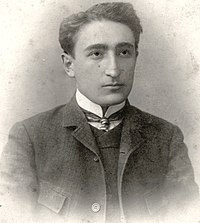
ალექსანდრე წუწუნავა მსახიობი, რეჟისორი, ჭიათურის დრამატული თეატრის ყოფილი ხელმძღვანელი.ალექსანდრე რაჟდენის ძე წუწუნავა (დ. 28 იანვარი, 1881, ლიხაური — გ. 25 ოქტომბერი, 1955, თბილისი) — ქართველი რეჟისორი, სცენარისტი, თეატრის მოღვაწე, საოპერო რეჟისურის და ქართული კინოს ერთ-ერთი ფუძემდებელი საქართველოში, საქართველოს სსრ-ის სახალხო არტისტი (1934).1910 წლიდან დაიწყო სარეჟისორო მოღვაწეობა ჯერ ჭიათურის თეატრში, ხოლო შემდგომ 1914-16 წლებში თბილისის სახალხო სახლში და რუსულ თეატრში. სხვადასხვა დროს მუშაობდა სარატოვში, ბაქოს ქართულ თეატრში და სხვა. სწავლობდა თბილისის პედაგოგიურ უნივერსიტეტში.
იან ჰომერი საქართველოს ჩოგბურთის ფუძემდებელი, დამსახურებული მწვრთნელი.მუშაობა დაიწყო ინგლისურ კომპანიაში „Forward and Salinas“. მაშინ ინგლისელებმა, ჭიათურაში, საქართველოს ტერიტორიაზე ჩოგბურთის პირველი კორტი ააშენეს. იან ჰომერი სწორედ იქ გაეცნო ჩოგბურთს.13 წლის ასაკში იან ჰომერი ხდება ქალაქის ჩემპიონი. მალე ოჯახი საცხოვრებლად გადავიდა თბილისში, მიხეილის (მიხაილოვის), ახლანდელი დავით აღმაშენებლის პროსპექტზე, 117 ნომერში, სადაც იმ დროისთვის ცნობილი საჩოგბურთო კლუბი იყო. ჭიათურაში მიღებული გაკვეთილების შემდეგ, იან ჰომერი თავის ოსტატობასაც ხვეწს და იმავდროულად მწვრთნელობასაც ეწევა. 10 წლის განმავლობაში (1918–1927) მაესტრო იანი თბილისის და საქართველოს უცვლელი ჩემპიონი იყო.
ალექსანდრე კავსაძელოტბარი, მომღერალ-მგალობელი.სანდრო კავსაძე დაიბადა სოფელ ხოვლეში (დღევანდელი კასპის რაიონი)1874 წელს, სიმღერა მამამ შეასწავლა, დაწყებითი განათლება სოფელ ხოვლეს ორკლასიან სასწავლებელში მიიღო. შემდეგ სწავლა გააგრძელა გორის სასულიერო სასწავლებელში, სადაც სიმონ გოგლიჩიძესთან დაოსტატდა სიმღერა-გალობაში, ამავდროულად ლოტბარის თანაშემწედ მუშაობდა. მოგვიანებით ის ლადო აღნიაშვილის გუნდის სოლისტი გახდა. 1894 წელს თავად ჯავსაძემ თავად შექმნა გუნდი, სადაც მასთან ერთად მღეროდნენ ვანო სარაჯიშვილი და მიხეილ კავსაძე. კავსაძემ გუნდი 1911 წელს მიატოვა, ის თავის შვილს, მიხეილ კავსაძეს გადააბარა და თავად საცხოვრებლად ჭიათურაში გადავიდა. იმერეთში მან რამდენიმე გუნდი შექმნა.
გრიგოლ მუხაძეექიმი, მეცნიერული და პრაქტიკული ქირურგიის ერთ-ერთი ფუძემდებელი საქართველოში.დაამთავრა ტომსკის სახელმწიფო უნივერსიტეტის სამედიცინო ფაკულტეტი 1908 წელს. 1911 წელს დაბრუნდა საქართველოში და დაინიშნა ჭიათურის საავადმყოფოს ქირურგიული განყოფილების გამგედ. პირველი მსოფლიო ომის დაწყებისთანავე ინიშნება თბილისის და მე-8 ლაზარეთის მთავარ ქირურგად. 1918 წელს დაინიშნა თბილისის ტრავმატოლოგიური ინსტიტუტის დირექტორად.[3] მეორე მსოფლიო ომის პერიოდში თბილისის ყველა ევაკოჰოსპიტალს ხელმძღვანელობდა. 1932 წელს დააარსა და სათავეში ჩაუდგა სისხლის გადასხმის ცენტრალურ სადგურს, რომელიც 1935 წელს მისი ინიციატივით გადაკეთდა სისხლის გადასხმის სამეცნიერო-კვლევით ინსტიტუტად.
გრიგოლ ტყაბლაძე თეატრისა და კინოს მსახიობი.გრიგოლ ტყაბლაძე დაიბადა ოზურგეთში 1907 წელს, ხოლო სკოლა ჭიათურაში დაამთავრა, რადგან მისი ოჯახი საცხოვრებლად იქ გადავიდა. 1925 წლიდან სიცოცხლის ბოლომდე ის ჭიათურის დრამატული თეატრის მსახიობი იყო, გარდა 1951–1952 წლები სეზონისა, როდესაც მიწვეული იყო ქუთაისის თეატრში. შესრულებილი როლები პიესებში: კოწია (შალვა დადიანის „გუშინდელნი“); სულეიმანი (ალექსანდრე სუმბათაშვილ-იუჟინის „ღალატი“); მენგო (ლოპე დე ვეგას „ცხვრის წყარო“; შმაგა (ალექსანდრე ოსტროვსკის „უდანაშაულო დამნაშავენი“)
შოთა ხეცურიანიექიმი. 1953-1966 წლებში მუშაობდა აგრონომად ოჩამჩირის რაიონის სხვადასხვა კოლმეურნებებში. 1966-1971 წლებში იყო ოჩამჩირის რაიონის სოფელ კოჩარის კოლმეურნეობა „საქართველოს“ მთავარი ეკონომისტი. პარალელურად დაამთავრა საქართველოს სოფლის მეურნეობის მეცნიერებათა აკადემიის მიწათმოქმედების ინსტიტუტის ეკონომიკური განყოფილების ასპირანტურა და 1966 წელს დაიცვა დისერტაცია ეკონომიკურ მეცნიერებათა კანდიდატის მოსაპოვებლად. 1971 წელს სამუშაოდ მიიწვიეს საქართველოს სუბტროპიკული მეურნეობის ინსტიტუტში. 1991 წლის 29 ნოემბერს კენჭს იყრიდა ოჩამჩირის რაიონის კოჩარის №56 საარჩევნო ოლქში აფხაზეთის ასსრ-ის უზენაესი საბჭოს დეპუტატად. იყო აფხაზეთის ასსრ-ის XII მოწვევის დეპუტატი.შოთა ხეცურიანს გამოქვეყნებული ჰქონდა 15-ზე მეტი სამეცნიერო შრომა და მრავალი სტატია სოფლის მეურნეობის ეკონომიკის აქტუალურ საკითხებზე. შოთა ხეცურიანი იყო აფხაზეთის კულტურის დამსახურებული მუშაკი. 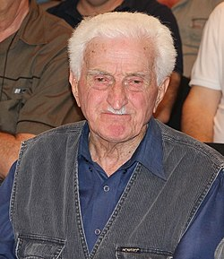
ღირსშესანიშნაობები
კაცხის სვეტი
კაცხის სვეტი ზეცისკენ მიმავალი საფეხურია, ეს არის ადგილი, სადაც გამეფებულ მარადიულ სიწყნარეში ღმერთის არსებობას იგრძნობთ. კაცხის სვეტი მდებარეობს იმერეთში, ჭიათურის მუნიციპალიტეტში. ის მიიჩნევა ჭიათურის სიმბოლოდ, რადგან აქ ძირითადად სწორედ და ბუნების შედევრის სანახავად მოდიან. კაცხის სვეტზე არსებულ პაწაწინა მონასტერში ერთადერთი განდეგილი ცხოვრობს. კაცხის სვეტზე ქალები არ დაიშვებიან. მისი სიმაღლე დაახლოებით 40 მეტრია. აქ არის 131 საფეხურიანი კიბე, რომელიც განდეგილს თითქოს ზეცისკენ მიუძღვება. კიბეზე ასვლას დაახლოებით 20 წუთი სჭირდება.
კაცხის მონასტერი
მაცხოვრის შობის სახელობის ტაძარი — მდებარეობს იმერეთში, ჭიათურის მუნიციპალიტეტის სოფელ კაცხში, მდინარე კაცხურას ხეობაში. აშენებულია 1032 წელს ქართველი მეფის ბაგრატ IV კურაპალატის და მისი მეუღლის ელენეს მიერ, რომელიც ბერძენი იმპერატორი რომან არგირის ძმისშვილი იყო.ეკლესიის ყველა შესასვლელის თავზე განლაგებულია ბარელიეფები (ძირითადად ლომის გამოსახულებები). ტაძრის ყველა ბარელიეფს ასომთავრული წარწერები აქვს დატანებული. წარწერათა უმრავლესობა დაქარაგმებულია (ამოგდებულია ხმოვანი).ტაძრის კანკელის ფრაგმენტები დაცულია ხელოვნების სახელმწიფო მუზეუმში.
ღურღუმელას ტბა
ღურღუმელას ტბა იმერეთის მხარეში, ჭიათურის მუნიციპალიტეტში, სოფლების - სკინდორისა და წინსოფლის მიდამოებში მდებარეობს, მდინარე ღურღუმელას ხეობაში, ზღვის დონიდან 555 მეტრზე. იგი ხელოვნირად შექმნილი წყალსაცავის შტენილს წარმოადგენს. ტბის ნაპირები წყალმცენარეებითაა დაფარული. ღურღუმელას ტბა სერებს შორისაა მოქცეული და ძალიან ლამაზი სანახავია, როგორც გაზაფხულის სიმწვანეში, ასევე შემოდგომის ცეცხლოვანი ფერებით გარშემორტყმული. შესანიშნავი ვრცელი ხედები და გაშლილ სივრცეებს შორის მოლივლივე წყალი მრავალ ადამიანს იზიდავს. აქ ნავით გასეირნება და თევზაობაც შესაძლებელია. თუკი ბუნების სიმშვიდეში განტვირთვა გსურთ, ღურღუმელას ტბა ამისთვის მშვენიერი ადგილია.
ძუძუანას მღვიმე
ძუძუანას მღვიმე ერთ-ერთი მნიშვნელოვანი არქეოლოგიური ძეგლია. იგი მსოფლიომ გაიცნო მას შემდეგ, რაც აქ მსოფლიოში უძველესი, 34 000 წლის, ძაფის ნაშთები იპოვნეს. მღვიმე იმერეთის მხარეში, ჭიათურის მუნიციპალიტეტში მდებარეობს, სოფელ მღვიმევის მიდამოებში, ზღვის დონიდან 480 მეტრზე. მის წინა ნაწილში პალეოლითელი ადამიანის სადგომი გამოვლინდა. მტვრის გამოკვლევისას გამოვლინდა უძველესი სელის ძაფის ბოჭკოები, რომლებიც არის დაჭეჭყილი, მერე დაძეძგილი და შემდეგ – მოქსოვილი. ასევე ზოგიერთ ბოჭკოზე შეიმჩნევა მცენარეული საღებავით შეღებვის კვალი. მღვიმის სიღრმე 175 მეტრამდეა, სიგანე 1-15 მ, სიმაღლე 1,5-10 მ.
მღვიმევის მონასტერი
მღვიმევის დედათა მონასტერი - XIII საუკუნის მნიშვნელოვანი ძეგლი მდინარე ყვირილის ხეობაში, ჭიათურის მუნიციპალიტეტის სოფელ მღვიმევის მახლობლად, იმერეთის მხარეში. მონასტერი მდინარე ყვირილას მარჯვენა ნაპირთან აღმართული კლდის მღვიმეში მდებარეობს. ამ კლდეს ბილიკი ასდევს, რომელიც მონასტრის ეზოს გადაჰკვეთს და კლდეშია გაჭრილი ჰორიზონტალურად. ეს ბილიკი მთავარ გამოქვაბულთან წყდება, რომლის შესავალში აშენებულია დიდი და პატარა ეკლესია, ხოლო წინათ იგი გრძელდებოდა დასავლეთით და სპეციალურ მისასვლელს წარმოადგენდა მწკრივად განლაგებულ გამოქვაბულამდე.
საჩქეფიას ჩანჩქერი
საჩქეფიას ჩანჩქერი იმერეთის მხარეში, ჭიათურის მუნიციპალიტეტის სოფელ სვერში მდებარეობს, მდინარე საძალიხევის ხეობაში. მისი ვარდნის სიმაღლე დაახლოებით 15 მეტრია. ტყიან ხეობაში, უზარმაზარ კლდეებსა და ლოდებში მოქცეული ჩანჩქერი ძალიან ლამაზ სანახაობას ქმნის. ეს ადგილი შესანიშნავია საპიკნიკედ და ზაფხულის სიცხისგან თავის დასაღწევად. ჩანჩქერთან წყლის დაგუბება წარმოიქმნება, სადაც ბანაობაა შესაძლებელი. გზატკეცილიდან საჩქეფიას ჩანჩქერამდე დაახლოებით 500 მეტრია გასავლელი, თუმცა ასევე შეგიძლიათ საინტერესო საფეხმავლო გასვლა მოაწყოთ სოფელ გუნდაეთიდან, რომლის დროსაც საჭინკიას კარსტულ მღვიმეს, საძალიხევის კანიონსა და სვერის ციხეს მოინახულებთ.